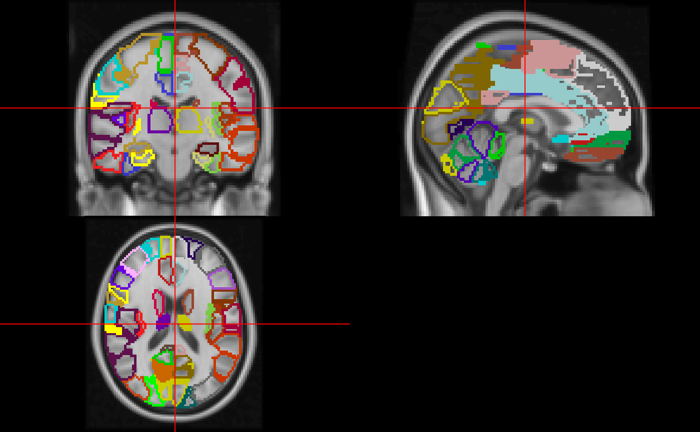
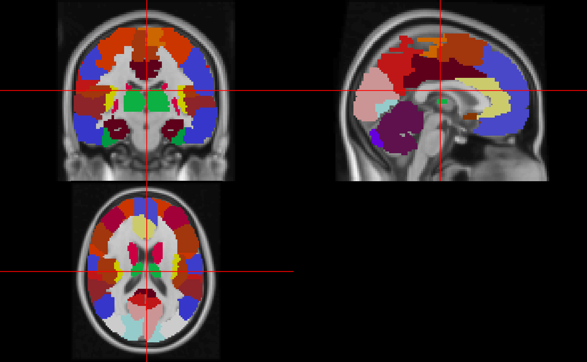

The AAL atlas is labeled in MNI space. In order to overlay on an image, we will read in the MNI template. Note, we need the 2mm image as the AAL is in that dimensions.
library(aal)
library(neurobase)
#> Loading required package: oro.nifti
#> oro.nifti 0.11.0
library(MNITemplate)
img = MNITemplate::readMNI(res = '2mm')Here we will show how to use the borders of the ROIs with the aal_labels data.
mask = img * 0
labs = aal_get_labels(version = "4")
labs$color = aal_colors[1:nrow(labs)]
tri = aal_get_border(version = "4")
tri_labs = tri$BORDER.V
tri_labs = data.frame(
index = tri_labs,
order = 1:length(tri_labs))
tri_labs = merge(tri_labs, labs, by = "index",
all.x = TRUE, all.y = FALSE,
sort = FALSE)
tri_labs = tri_labs[ order(tri_labs$order),]
tri_labs$order = NULL
tri_labs$relabel = factor(tri_labs$index,
levels = unique(tri_labs$index))
# save this for later
relabeled_fac = tri_labs$relabel
tri_labs$relabel = as.numeric(tri_labs$relabel)
tri = tri$BORDER.XYZ
cols = tri_labs$color
cols = unique(cols)
mask[tri] = tri_labs$relabel
neurobase::ortho2(img, mask, col.y = cols)
Here we will read in the full atlas and plot it:

In order to try to keep the colors consistent as with the borders, we will have to refactor the values of the image:
relabeled_atlas = atlas[ atlas > 0 ]
relabeled_atlas = as.numeric(factor(relabeled_atlas,
levels = levels(relabeled_fac)))
relabeled_atlas = remake_img(relabeled_atlas, img = atlas, mask = atlas > 0)
neurobase::ortho2(img, relabeled_atlas, col.y = cols)